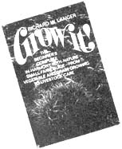
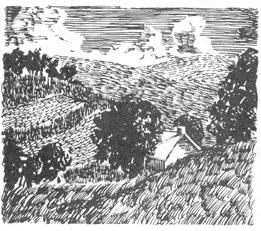
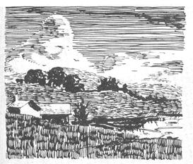

SPECIAL NOTE: GROW IT! is a big book and even if a chunk this size were to be run in issue after issue after issue of MOTHER, it would take over two years to put the complete volume in your hands. If you haven't got two years to play around with, we recommend that you truck on down to your nearest book store and shell out $8.95 for your very own copy of GROW IT.! That way, Richard Langer will be happy, Saturday Review Press will be happy . . . and we're betting that you'll be happy too, it's a darn good book.
EXTRA SPECIAL NOTE: All material here reprinted from GROW IT! Copyright©1972 by Richard W. Langer.
At last! For the first time since the HAVE-MORE Plan was published way back in the 1940's, a fellow named Richard W. Langer has come up with a 365-page book that really introduces a beginner to small-scale farming. Wanna raise your own fruit, nuts, berries, vegetables, grain, chickens, ducks, geese and honeybees? GROW IT! tells you how to get started, like it, and here's the introduction and first chapter from the book.
For, eschewing hooks and tasks.
Nature answers all he asks;
Hand in hand with her he walks,
Face to Face with her he talks,
Part and parcel of her joy, -
Blessings on the barefoot boy!
-JOHN GREENLEAF WHITTIER
Perhaps not since the fall of Babylon have so many city dwellers wanted to "return" to the country without ever having been there in the first place. For the first time, the new generation reverses youth's traditional flow toward the city in search of opportunity. A cry of "back to the soil, to real life" leads the exodus. But just as the mechanically unskilled peasant floundered when tossed into the technocratic mechanism of the city, so today's new urban peasant, unskilled in agrarian survival, flounders when released in the meadow. What is lacking is a roadmap, a handbook for survival on the farm. Where once the craft of working the land and reaping its harvest was passed from father to son, today the torch of knowledge and experience consists of how to get credit cards and fill out income tax forms.
So how do you manage to jump off the technocratic trampoline and land in the country still standing on your feet? Returning to the land, homesteading, in the true sense of the word, be it on five acres or five hundred, getting to know mother nature again-these are things both age-old and at the same time new as never before, because we have been away so long, more than generations, some of us.
How does one begin? And where? Does it make a lot of difference what part of the country you choose? How much land do you need for a row of beans? How many plants for a blueberry patch? A field of sunflowers for you and your chickens? And how do you care for a baby chick or a hive of honeybees? How on earth do you milk a goat? How do you plow and fertilize and harrow the fields, working them to yield good grain and foil.
Do you have to do all that, anyway, to live off the land? Well, country living isn't all just stretching out in a sun-warmed grassy meadow and taking it easy-not if you're going to do right by mother nature. It's give and take, the natural cycle life, and we're just beginning to learn that maybe we've done too much taking and not enough giving. But homesteading is clean living, good, earthy, sun-drenched work, leaving you that happy kind of tiredness at the end of the day. And its good play, too, reaping the whole cornucopia of rewards that nature gives back to those who work with her. That's true if you're homesteading a simple weekend family farm of a couple of acres-just about right for a large vegetable plot, a berry patch, an orchard of half a dozen trees or so, maybe a beehive or two, and a small flock of Crested White ducks that don't need daily tending. It's equally true for a spread of a hundred acres you've still, in spite of the way the land is running out this world, managed to find somewhere and hope to build up alone or work communally into a better place for people live.
The pages that follow are written as a kind of "boy scout manual" for those planning to return to the land. The ideas are for dreaming and doing. You may want goats and chick and pigs and bees, or none of these at all, but a big field of sweet corn instead. You may want a pond or a wood or a grape arbor, or all three. Whatever your dream, plan your escape to the country now, even if you can't move out yet. Planting an orchard, building a pond and livestock shelters, getting fields ready-these are all projects that take time, but can be worked at during the weekends. Your fruit trees, for one, will take several years to bear. If you can plant them during vacations from the city, they may well be waving their blossom greeting when you come home to stay. The rhubarb patch be started one spring and its harvest toted back to the apartment for years to come. So can a summer's tomato crop the yield from your strawberry patch, and pumpkins from among the corn.
And if you're already settled in on your farm, here are ideas for bettering your homestead-nature's way. What a field of clover can do for your land, for instance, and how much grain for cereal and bread you'll get from a half acre. What a milch goat will need to supply your milk pail happily, or honeybees to stock your larder of sweets.
Although there is no virgin country left to pioneer, we can still reclaim land worn out from man's wasteful rapacity and replenish nature's store of goodness. And there's no need to give up the good things technology has offered us-there are many. There is only the need to temper the uncontrolled progress that today threatens to multiply our waste and destruction to the point of no return, to a point where nature will stop fighting back.
Nature is flexible. If man wants paradise, she will oblige. If he wants despair and destruction, she will oblige. Neither will come overnight. Nevertheless, change marches on steadily, unrelenting. It is still possible to decide which road will be taken, but not for long.
Of course you alone cannot save the world. But you can do your part. Grow good rye and wheat for your bread and noodles, grow good corn and oats for your livestock. Live and breathe, enjoy your life as you plow the rich earth, as you watch the crops rise from the earth to yield their bounty, as you celebrate Thanksgiving from a table groaning under the weight of your own fresh produce rather than the months-old, half-decayed cellophane varieties that the city dweller has learned to accept as fresh. And save the good seed from your rich yield to plant again, and harvest again, and plant . . . in the generous, timeless cycle of mother earth. Plant a tree where trees have been felled and only barren-seeming earth remains, waiting. Plant a bramble berry patch to harvest and share with the small wild things that have so little place left to call their home. Dig a pond and stock it with fish and frogs, and furry creatures will come to it thankfully. Sow squash for your winter larder, and dry a few gourds to hollow for errant birds in search of a simple guesthouse in their restless flight from encroaching macadam world. Raise a goat and give it a good home, not just a make-shift one somewhere. Raise a goose two and some chickens. They will all do their part in return, enriching your land with natural fertilizer and giving you simple necessities of life-milk, cheese, meat, warm down your winter blanketing.
And then enjoy the honey pot your bees gave you as if you were Pooh. Enjoy a lazy day fishing the pond or tramping the fields and meadows. Enjoy the fruits of your labors. The world will be a better place for them. Today one small,well- kept farm, even of only a couple of acres, is worth a thousand cars spilling off the General Motors assembly line.
Apprentice yourself to nature. Not a day will pass without her opening a new and wondrous world of experience to learn from and enjoy. If we really mean to return to the land, let not return empty-handed. Let us return to it something of value, some token of our alliance with mother earth. What has been termed organic fanning is precisely such a recognition although perhaps a misnomer. For organic farming, its name notwithstanding, uses both organic and inorganic material, plant and animal life does. The purpose of the so-called organic method is simply to work hand in hand with nature, to avoid using destructive chemicals. More properly perhaps it should be called natural farming. But the name of the game isn't semantics, it's the healthier, saner, more rewarding life that comes of making your own way in the world and know, that you've done a day's work that counts. So bring a small house gift when you come to the land-two hands full of willingness to apprentice.
The time is coming when farming will be done in the city. There's already talk of multistoried urban farms. These skyscraper produce factories will raise swine on one floor, chickens on another, with strawberry plants in between, all in one fully integrated, coordinated, complementary, scientific, and unnatural, oral pseudo life cycle. The amount of land needed will course, be less. The quality of food produced . . . well, let's leave that to your imagination.
The people operating these juggernauts of scientific agriculture will know very little about nature, and even less about land. After all, why should they? It's not even inconceivable that in some distant civilization knowledge of plants growing in anything but test tubes or animals living in anything but concrete boxes will have vanished from man's experience-if he survives that long.
Meanwhile, back on the farm, to understand the land is to be able to work it well, to build it up, to give nature a chance. Few men today will ever be able to say, "I left the land better shape than I found it." You will be able to. And a greater deed can no man accomplish.
Take a spade and go for a walk around your fields. Stop at random and make like a gopher. Dig a hole a foot or so deep. Pick up a good handful of soil from the top of the hole and one from the bottom. Crumble it in your hands, smell it, check the color. This is mother earth, your share of it to care for, to feed, to harvest. Get to know the soil. Your farm will be the richer for it.
Soil consists of both organic and inorganic material. The two are complementary and essential for life. The organic, however, developed from the inorganic over the millions of years the earth has spun in its orbit. To give a simplistic description, all the destructive forces of nature-earthquakes, floods, frost heaving, wind and water leaching, glaciers, torrid heat, you name it-converged upon the rocks, which over the span of millenniums crumbled. The most solid of rocks has microscopic pores for moisture to seep into. Freezing water expands, rupturing the pores. Even where water doesn't freeze, it expands and contracts with thermal changes. A coffee-cupful of water shattered a house-sized boulder here, a thimbleful of water a six-foot rock there, not into a million pieces at once, but a million pieces in a million years. Glaciers ground the boulders into the earth, pulverizing pebbles between them as the millstone does wheat. From this stone flour came soil.
Somewhere, sometime, amino acids and enzymes entered the picture, catalyzed by the energy of lightning from a cauldron of nitrogen, oxygen, and carbon. For aeons enzymes burst forth and died during the crashing of storms, able to survive but the briefest of time, until some of them developed the facility to reproduce. And reproduce they did, until again sometime, somewhere, bacteria and viruses developed. The bacteria could draw energy from both the minerals in the crumbling rocks and the atmosphere.
Specialization set in and bacteria became more complex. The most primitive plants evolved, some of them perhaps nothing more than jumbo-sized bacteria. Eventually came lichen and mosses.
The die was cast. Mother earth turned in a direction that was to dominate her course from that time to the present. For the primitive plants died, leaving organic matter to mix with the inorganic. Lifebearing soil formed, slowly, in minute quantities, giving more complex plants a chance to evolve. Perhaps had the crystalline viruses been more efficient than the bacteria, they would have begun to dominate the world at that crucial juncture. Perhaps those first primitive plants would never have evolved. Perhaps instead the viruses would have increased in complexity. Perhaps the whole chain of life would have developed along inorganic lines instead of as we know it. Perhaps a super-complex ruby would be farming your field today, leading a plow drawn by an emerald to prepare the earth so it could grow rock crystals. Perhaps if man does not learn to recognize the value of life and nature, mother earth will yet have to start over. Maybe it will be crystals next time.
What happened this time, however, was that the roots from primitive plants began to work on the rock pile. A growing root, although it obviously prefers soil, can split a rock if it has to in its search for nutriments. This process, combined with the action of numerous acids released in vegetative decay, helped raise even further the organic content of what was slowly becoming soil. As it did so, more complex plants could develop and in turn be interred in the soil. The hills of mother earth were greening.
If you're serious about returning to the land, it will mean trying to help counteract the destruction spawned by today's total technocratic zeitgeist. You must help nature keep her mantle of green. Without it there is no future.
Good soil is almost one-fourth air. This, you'll agree tilling a few acres, doesn't make it as light as a soufflé. But the air is essential to plant growth-yet another reason why organic matter in the soil is so vital. Not only does it supply nutrient it facilitates aeration. And without aeration bacteria and fungi could not break down the organic matter itself. Aeration also aids in oxidation, one way the minerals in the inorganic matter are freed for plant use.
Basically then, the more organic material in your soil, the more plant life it can support, which in turn contributes more organic material so the soil can support even more plant life. There are, of course, limits to all this, but the more you grow, the more you can grow and the better quality it will be - as long as you keep it natural.
TILTH. The physical quality of your soil, the tilth, is what you're looking at when you're digging around on your land to see what's what. A soil in good tilth will be full of decaying organic matter. It crumbles easily in your hand, breaking down into pea-sized particles. You can crumble these particles even further with a little finger work, for each particle is many small granules of sand. And since the particles do not fit together smoothly, like cement blocks, but loosely, like a jumble of macaroni, there are empty spaces to hold water and air.
Good tilth gives your soil plenty of aeration and water-holding capacity. The greater the degree number of ameliorated soil particles, the better the soil. And the better the tilth, the better your crops.
SOIL TYPE. Rub the soil on your farm between your fingers The gritty feel is the sand. When the soil is dry, the slightly slippery-feeling talcum-powder-like component is fine silt. When the soil is wet, the plastic, flexible quality is produced by the clay.
The study of soils can fill a book by itself, it has already filled many. For the apprentice farmer, however, the basic threefold classification of sandy, clayey, loamy soil suffices. What you want, ideally, is loamy soil.
Sandy Soil. Approximately 60 percent sand, 20 percent cent silt, and 20 percent clay. Drains too fast.
Clay Soil . Approximately 60 percent clay, 20 percent cent silt, and 20 percent sand. Doesn't drain enough.
Loam Soil. About 40 percent silt, 40 percent sand, and 20 percent clay. Drains at just the right rate to keep the soil moist without its being sopping.
You can't change the actual proportions of your soil too greatly. Unless you're going to truck in a couple of thousand tons, say, of silt. But with careful tillage-fertilizing well with manure, both green and barnyard, composting, liming, and using crop rotation-vast improvements can be made in almost any soil.
Water is the very life of any farm's existence. Without it you have a desert. After all, a desert is potentially rich farmland, its mineral content usually being very favorable. Irrigation has been used in the Southwest of the United States and in many areas throughout the world to make arid and semiarid lands bloom. This form of intensive agriculture can be very productive. It is also extremely expensive, however, and therefore not a viable alternative for the small homesteader. But reclaiming dehydrated soil is only one side of the ecological coin. It's the other side, preventing the destruction of the watershed in the first place and the subsequent denuding of the land, that is your primary concern.
A large part of the Sahara was once the grain bowl of the Roman Empire. Poor farming and overgrazing set in motion the erosion cycle that culminated in today's barren desert.
Our own Midwest suffered dire consequences when the Great Plains were plowed up and the native grasses that had held and developed the soil for centuries were destroyed. Some of these grasses had root systems so extensive that if all the hair roots of one single stalk were laid end to end, they would reach over three hundred miles. This means-to play the traditional game of pictorializing incredible numbers-the roots from the Plains grass growing on just a few square yards of soil could be wrapped around the equator several times. But the roots weren't stretched end to end. They were woven together in clumps. They were the warp and woof of the land.
Along came the plowman, planting domesticated grain grasses and such short-rooted crops as corn. Between crops the soil was left exposed to the destructive forces of sun and wind. In New England, where American farming began, this might have been no great catastrophe. Rainfall was heavy enough so that it would have taken centuries for the land to be destroyed. In the more arid Plains states the consequences were severe. Within only a few decades the world's greatest grasslands had become a dust bowl.
You too can destroy land, in a decade. Or, working hand in hand with nature, you can turn your farm into a small garden of Eden of ever-increasing abundance.
Water for your fields is dependent on the watershed. The watershed is a drainage basin or series of such basins defined by the topography of the land. Rain supplies the water for such a drainage basin.
Given two parallel rows of hills, for instance, the rain will flow off the hills into the valley between them. At the bottom of the valley, if the surface area of the hills is large enough, the runoff will form a stream. If the runoff is small, there might be only a swamp, or just plenty of subsurface water.
The water from this basin will drain out of the valley, either in the form of a brook or as subsoil seepage, into a larger watershed. Streams flow into creeks that flow into small rivers, and then into larger ones that finally find their way to the ocean.
Evaporation from the ocean, the rivers, and even the soil and the plants of your small farm rises into the atmosphere, which, when it reaches saturation, lets the water fall back the earth in the form of rain. And the rain runs off again from the hills into your watershed. It's all part of one grand natural cycle.
Your farm as a mini-watershed is essential to the continue existence of this cycle. Even as great a watershed as the one for the Missouri River, covering roughly 500,000 square mile would eventually destroy itself if it were surrounded by poor drainage and erosion.
The piece of land you buy, no matter how small, comes with a watershed, or a part of one, even if you settled in a wide, open place. Your job is to find out what that watershed is like, then, in almost every case, to improve Watershed management involves work you might not have considered part of country living. But it also affords an immense amount of rewarding pleasure. Part of many a farm's water program is the pond, an invaluable source of fish and plants such as watercress, but also a place for ice skating in winter and a cooling summer dip on the way home from the fields.
You can't be expected to control underlying geological formations, yearly precipitation, and other natural regional variations. But there are four basic characteristics of a gas, watershed that you can regulate through careful planning. These are also the characteristics to watch for when first checking out your land.
QUALITY OF THE RUNOFF. Land that has been carefully planted and well managed will have a runoff that is clear. Even after a rainstorm surface water draining into a creek or pond will be clean and pure. It may be clouded with soil particles immediately following a particularly heavy burst of rain, in that case it should settle out within an hour when a glass jar full of it is left sitting still. Muddy runoff comes from poorly planted, sick soil. It will silt up your streams and ponds, kill your fish, take away your topsoil, and generally deteriorate your farm. Not a kind word can be said for allowing this kind of poor drainage.
NONCYCLICAL STREAM FLOW. The greatest changes in nature are wrought by cycles. The alternate freezing and melting of water in the minute cracks of boulders will eventually crumble even granite. Alternating high-flow runoff and periods will in the same way wash away the best soil. The flow of a stream through a watershed should be fairly regular year round. Of course, it will peak in the spring if you're in snow country, and drop to some extent toward the end of summer. But a good watershed should have enough organic matter absorb any threatened water accumulation. When the snows melt, there should be no torrent of water rushing from the land surface into the stream. Rather the melting snow should be absorbed by the soil as it warms slowly to water and then gradually makes its way beneath the ground to seep into the stream.
SOIL CONDITION. The soil carries water throughout your land the way the vessels of the body carry blood throughout you, except instead of being pumped around by a heart, the movement of water is produced by a cycle of gravity and evaporation. But just as a limb cut off from its blood supply becomes gangrenous, so land cut off from water dies. Even layers of hard clay, for example, are not incapable of supporting plants, if such soil is revitalized by the introduction of organic material capable of water retention. Clover sod plowed under, followed by rye and buckwheat or wheat plowed under alternately with generous liming-one of the most effective combinations crops for this purpose-can give miraculous results in a couple of years.
As mere clay, soil will not absorb water. Rain and melting snow run off quickly, taking even more soil with them, and things just become steadily worse. But after even one year of soil revitalizing, enough organic material will be plowed under to act as a sponge nucleus, absorbing rainwater for use by new plants, whose fine root system in turn holds the soil in place and works as a sieve, catching minute soil particles in the water. Muddy runoffs, brown creeks, and sludge-filled ponds become clear, and life begins to abound.
VEGETATION. The best natural protection for a watershed is grasses, legumes, and trees. All three permit utilization of the watershed for other crops as well. Properly managed grassland and meadows afford nutritious grazing grounds for your livestock. Legumes not only make hay and when plowed under build soil, but those like sweet and white clover are also excellent hunting grounds for your honeybees. (Honeybees can't gather the nectar from red clover because their tongues aren't long enough.) Trees yield lumber when felled selectively so as not to upset the watershed balance. A hillside orchard combines both good watershed management and a yield of fruit and nuts for your table.
Keeping vegetation balanced on your acreage is the obvious sign of good management. Overgrazing a pasture one year can undo ten years of soil-building. For optimum utilization of the land, contact your local Soil Conservation Service. Conditions vary from area to area even within a county, but these people know your land and will be able to suggest the specific tack to take for the prevailing conditions, as no general manual on farming could hope to do.
The big country kitchen has always been the city dweller's dream of the farmhouse family room, and rightly so. But there is a second place where all the farm inhabitants, human and animal, gather-the pond. It's the old watering hole to the livestock; to you it's for fishing, raiding nature's ice bucket, gathering watercress, fire-fighting if need be, not to mention swimming in summer and ice skating in wintertime. Besides all this, a pond is often a vital link in maintaining a wellbalanced watershed.
Many farms come with an old pond, natural or man-made. But traditional farm ponds, part of the rural fire-fighting equipment and the water troughs' supply system, are located close to the barn. Often the barn is halfway up a hill, with the pond below it. Runoff from the barn area may make the water unsuitable for swimming. A second pond never hurts. And, of course, your farm may be one of those that never had one in the first place.
Contact your local Soil Conservation Service or Agricultural Extension Service and discuss pond-building with them. They can help you decide on the best location, size, and layout of the pond. Check up on any government assistance that might be currently available to help you pay for pond development. Since in many cases ponds are vital in flood control as well as for general land improvement, tire government will often offset part of your expenditures. But always remember to check these deals for attached strings. Some government fish-stocking plans, for instance, call for- your ponds to be open to the public as recreation areas during parts of the year. That may or may not be fine with you. The point is, make sure you know what you're getting into.
A pond can be built at the. head of a spring, or in an easily dammed gully with a small, trickling stream-but don't try to dam off a stream of any size. It can't be done without concrete and good engineering. The important thing for a dam is that the soil be of a variety that holds water well and that the core of the dam be packed solid.
Even if there's no direct source of running water on your property, you might be able to build a "sky pond". A pond is one fed solely by runoff. A ten- to twenty-acre watershed and medium rainfall should be able to supply a ten-foot deep one-acre sky pond. However, it may take a bit of sophisticated soil management. If your hills are full of gullies or in a state of progressive erosion, you'll have to remedy that first Muddy runoff from overcultivated fields or bare, steep c will fill a sky pond with silt in a few years. Mud flats are of no benefit to your farm.
Whatever the means of feeding your pond, remember it can't just a shallow puddle. A deep one-acre pond (just about minimum practical size) is far superior to a two-acre wading pool. The latter may look nice enough, but leaving out for a moment the fact that you can't swim in it, a shallow pond a high evaporation rate and is a fabulous mosquito breeder. A deep pond on the other hand, will support plenty of fish to eliminate this winged problem while supplying your table with some interesting variety. In a good one-acre pond you can catch two hundred to two hundred and fifty pounds of fish a year and the yield increases progressively with larger ponds as long as they're deep enough so as not to freeze solid in winter fish crop can be harvested as regularly as anything else on farm. In fact, to keep the pond well balanced, fish you must! Sitting in the shade of the old weeping willow with a bamboo pole dipping its line lazily in the pond is a "job" that need be done-it's pretty hard to imagine another essential farm task as pleasant.
There are other reasons besides the comfort of the fish population for making a pond deep. For one thing, the ratio surface area to total pond volume makes a big difference in, watershed value, particularly in a sky pond. A flat, pancake-like pond loses immense volumes of water through evaporation much in fact that in summer it's apt to turn into a swamp. Of course, you don't want a pond like a swimming pool, with perpendicular sides, either. Sun-warmed shallows make best breeding ground for many fish. What is important is that the center be deep. This gives the fish a place to go with enough oxygen for them in the wintertime when the pond freezes over.
Pond life in general needs clear water, not silt. This means land leading down to the banks should be planted to a go deep-rooted cover crop like clover that will assure a runoff clear as the rain itself, with only a few nutrients added through ground seepage.
Berry bushes and trees, on the higher banks where their will not be drowned, invite the, homesteading of mildly from birds to raccoons and rabbits. Try to make one side your pond into a dense multilevel jungle by planting low shrubs such as hazelnuts, and willows toward the batiks, wild chew crabapple, and other fruit and nut trees farther back, and a got stand of hardwood and evergreens to give more distant cover.
All this is a lovely sketch on paper. But what about actual digging a pond? Let's say you're starting from scratch. You arranged for a bulldozer operator to come in acrd do the excavating ting. It will take him only a clay or two to scoop out a small pond.
The earth removed from the bottom will be piled up at one end as a dam. The slope of the soil on the water side should be considerable, perhaps as much as 60 degrees. The side away from the pond can be steeper. Get specific information for your site from the Soil Conservation Service. It's a good idea flatten the top into a roadway rather than leaving a mound. Then too, provision must be made for extra water to leave the pond. It should never be allowed to run over the dam. An overflow culvert, or series of small concrete pipes buried under the roadway at the top of the dam, will serve as a good spillway. The spillway should be at a level such that the water overflows with some regularity. You don't want the high-water mark to be so high that the pond overflows for only a day or two with the spring floods. A slow, small, steady trickle is what you want for the best overall pond balance.
With this steady flow of water through the culvert, you will have a natural spot for a watercress field on the other side of the darn from the pond. Good watercress needs cool, clean, continuously flowing water. Water from a limestone area is best. However, throwing crushed limestone into a stream upwater from the cress will give good results too. Even if you don't build a pond right away, you can still have a cress bed, wherever there is clear running water.
Watercress is an easy no-muss no-fuss faun crop, Plant it once and you'll probably be able to harvest for decades. Your best bet is to get established sprigs and plant them at the edge of your stream. However, it's not much more difficult to start thern from seed. Stick a couple of pots of soil into your stream so they are just slightly higher than the water level. Sow the seeds. Once seedlings develop, transplant there to the banks of the stream. You can sow seeds directly into the banks but in that case be prepared to do most of your harvesting about half a mile downstream. Plants mature in fifty to sixty days.
While you're waiting for the water to rise enough to overflow so you can grow your watercress, fertilize your dam well with manure and sow to rye and clover or crown vetch to prevent erosion. The second year, once the cover crop is well rooted, plant a row of fast-growing willows.
It will take your pond anywhere from a month to half a year to fill with water, depending on the watershed conditions for your particular site. As shallow water begins to fill the pond, you'll notice life joining it. First insects like water skaters and tailors; then frogs and toads appear, seemingly from nowhere, to feed on the insects. Word of a new place to pioneer somehow spreads to neighboring ponds or swamps. Algae grow in the sunny shallows. Birds conic to splash and bathe; if you're lucky some of the rapidly vanishing long-legged waterfowl will stop by for a frog feed. In their droppings and under their "toenails" they carry seeds and semimicroscopic animal life, such as amoebas and hydras, from other ponds, stocking yours with innumerable new inhabitants.
The pond will rise and fall as the water settles in. Much of the new life will die on the drying banks, only to be swept up in the water as it rises again, this time to feed the remaining life. Winter will come, and as the ice covers the pond, the will vanish, the insects disappear, and plant life for the most part, will die down. Even if you are in an area of very little freezing weather, you'll see the yearly cycle of the pond stilled into semihibernation.
But come spring, new life awakens the pond. Vegetation we be much denser than the first year. Colorful dragonflies an other flying water insects join the pond community. The frog population explodes into the thousands. Chances are you even find some minute fish in your pond by the time midsummer met rolls around. All without your ever having put a sing animal into the water. But you'll want to introduce son varieties of your own to speed things up.
Now that plant and animal life are established, you can plan on stocking your pond, since the fish will have something, eat besides each other. If the water is deep enough, trout will take; if not, bass and sunfish certainly will. For the best selection, have your pond stocked from a local hatchery. If you can't do that, go fishing in another pond for the day and stock yours with the catch. A dozen bass will do a good job of populating a pond in a couple of years.
Besides stocking with fish, you will also want to fertilize your pond. Fertilize a pond? Yes. Like any other "field expect to harvest, your fish pond needs fertilization. It's not like sprinkling fish food into an aquarium. What you want to do is give nature a boost so the pond can support more and bigger fish on its own Fish-pond fertilizer is the same as that for your land. Manure, compost, and ground rock phosphate will help nourish strong plankton, which in turn feed the fish. The exact amount of fertilizer to use varies greatly with pond size and layout. General rules are pretty useless, except to say that a monthly summer feeding is better than dumping ever thing in at once. If you can, check with whoever stocked your pond for advice on fertilizing it. In any case, remember y can overfertilize, making the water dark and scummy. This not only deprives the fish of their oxygen, but makes for lousy swimming.
Once the natural cycle of a pond is well established, yet only task, except for the occasional fertilizing, will be fishing. Regular harvesting of the pond makes for bigger and better fish-not to mention tastier ones.
On almost every farm there's a s trees somewhere-in a gully area or on a knoll for some reason not suited to crop production. At least not crops in the usual sense of the word. But woodlands do provide timber for building . or fence posts, and fuel for that crackling winter fire whose leftovers, the wood ashes, in turn make a very valuable potash-rich rich fertilizer for your vegetable garden. In the Northeast the woodlands may also supply maple syrup. Elsewhere they act windbreaks, help in erosion control, and shelter local wildlife.
If there is a woods on your farm, build it rap with good management. If there is none, start one on a plot you don need for crops or pastures. A particularly good location from the standpoint of encouraging wildlife is flanking one side of your pond. Wild pheasant and other game birds may visit your forest park, and you'll see hare scampering and inquisite squirrels on your fishing trips.
WOODLAND RESUSCITATION. Probably less effort entailed in woodland management than that of any other "crop". Moreover, the tasks involved can be done almost any time, when you're not busy with something else and are looking for a good outdoors project for a sunny day.
Assuming you already have an acre or two of trees remotely resembling a woodland, the thing to do is improve the glade. Specific recommendations would vary from area to area, but the basic principles are to thin out the stand, permitting fewer but straighter trees to grow, and to remove all underbrush except from about a fourth of the area, left untouched for the wildlife. Eventually you may want to offer them a higher standard of living by planting more fruit trees and berry bushes; in that case, your wildlife shelter is a temporary, makeshift one for the couple of years it's going to take you to' rehabilitate the woodland. Meanwhile, on a cleared quarter of an acre you can be planting new, more productive undergrowth such as hazelnut bushes, wild roses, and dense bramble berries for good nibbling. Hawthorn, wild plums, and persimmons are also excellent. Flowering dogwood, bayberries, and honeysuckle will not only attract wildlife, but will also enhance your own explorations of the woods, and maybe start you making scented homemade candles or fragrant potpourris for your country kitchen.
You want the woods to support wildlife. You also want to exclude livestock. Don't make the forest glade part of the pasture. A pasture should have its own shade trees. Livestock roaming the woods will nibble away seedlings, injure the bark and roots of young trees, and more than offset the addition of their fertilizing manure to the soil by trampling and packing the ground. You can't very well till the forest to make up for the damage.
If you're trying to rehabilitate an old wood, probably the first thing you'll notice is that the most desirable trees-the hardwoods such as oak, ash, hickory, sugar maple, and black cherry-are scarce indeed. That's because they have been felled without thought for the future. Your job is to maximize the growth of any few remaining ones. Some softwood evergreens, larch and fir, for instance, which do not make particularly good timber or firewood, also should be allowed to remain, to give esthetic balance to the woods and because they offer a variety of food and shelter for the wildlife.
One thing to remember from the outset in tackling your renewal project is that the edges of your woods protect it. You don't want to open the glade so much that the soil is suddenly exposed to new sun and wind conditions. Leave a dense hedge of trees and bushes around the borders. It's comforting for wildlife too.
Secondly, plan your cutting so that for the most part the poor specimens, extremely crooked or split trees and decayed ones, are the ones you remove. An exception to this rule is in your wildlife refuge. It will want a few rotten hollow logs. If there's a dearth of them there, haul your best specimens from a cleared section over to the reserve.
To space the trees for maximum growth you will need to thin the woods. Leave young saplings, for the future, wherever they are more than five feet apart. Older trees should be spread out so that the crown of any one is not touching its neighbor. For maturing trees, this usually means a space of ten to twenty feet between them.
Give the trees a helpful pruning. Remove dead or broken branches, and those within reach that simply make the tree too dense. This isn't the kind of thing you do yearly. But every old, neglected mini-forest should have it done once. The project will no doubt take several years of spare time, so don't try to set yourself a two-week rehabilitation deadline.
All trimmings and cuttings should be removed from the forest floor. Leave drying brush around, and you're inviting a forest fire. If you have a means of chipping the wood, the chips can be spread on the forest floor along with a heavy dose of nitrogen-rich fertilizer, such as bone meal, tankage, or dried blood. They will provide a have nothing to chip with, break the branches into as small chunks as you can and build a long-term compost heap at the edge of the forest. After it has decayed enough it can be returned to the forest floor.
ESTABLISHING WOODLANDS. If there's no patch of woods on your farm, start one. The best location is the worst one-that is, the spot that isn't much good for anything else. Trees will grow almost anywhere except on very poorly drained land. A gully or a rocky field can often be converted into a wonderful forest. Even an acre is enough to lose yourself in for a day, watching the wildlife, so don't decide to pass up a woodland because of limited space. And it's going to take le than any other project on the farm, so start as soon as you can.
The first thing to do is to check with the State Forest Department to see what species they recommend for region and whether they have a reforestation program that will cover part or even all of the cost of your stock. Once you've picked the location and desirable species-always remembering to include some black walnut and other slow-growing, high-value timber trees that will soon become extinct without help of small local plantings-order your stock for spring delivery. You'll want to plant as early in the year as possible. Guidelines for planting the larger orchard trees are given in the chapters on "Fruit" and "Nuts".
And you'll want some trees larger than seedlings. They cost more and are harder to get sometimes, but they will add variety to what might otherwise be a field of Christmas trees. Also, a few older nut and fruit trees interspersed in your forest will able to sustain wildlife much sooner than trees started from young short whips. Plant some black locust as well; it's fast-growing and makes excellent fence posts. Just make sure; its black locust.
Good spacing for your forest, using three-year-old seedlings or transplants, is a criss-cross pattern, six by six feet to begin with. Even leaving more room around the bigger transplants that are giving your forest its head start, you'll need over eleven hundred trees per acre (another reason for starting your for early). It's going to take a while to plant a couple of acres. By way of comforting comparison, it would take nature unassisted many hundreds of years to reforest a bare field. And chant are if you didn't do it, nature would no longer be able to. The cost of a hundred spruce seedlings-what you'd pay for a couple of pizzas-is a small price for giving nature back her own.
As the forest grows the first year, high grass will sprout between the trees. Young pine trees in particular are a sort of living fire hazard. Cut the grass and, the first two years, haul away to help minimize the risk of fire. The cut grass can be put to good use by composting and then returning the results the trees as mulch. If you need hay, you can cultivate the area between the trees with timothy and clover the first couple years. Whatever you choose to do, keep the ground cropped close.
As the trees get taller, you'll have to thin the planting. grid six by six feet will not support maturing trees. In fact, after fifteen years the stand should have been thinned down to about two hundred and fifty trees per acre. The rest you can use for fence posts, firewood, and furniture.
Fifteen years? That's an awfully long time, you say knows where you'll be fifteen years from now? True. But even if you're not on the same homestead then, you will have left behind you a small forest, part of which, like the black walnut trees, will keep growing for another hundred and fifty years. A utilitarian heritage of beauty that, had you not planted it would never have existed. How many people do you know who have given nature back even a small forest?
|
 |
 |
 |